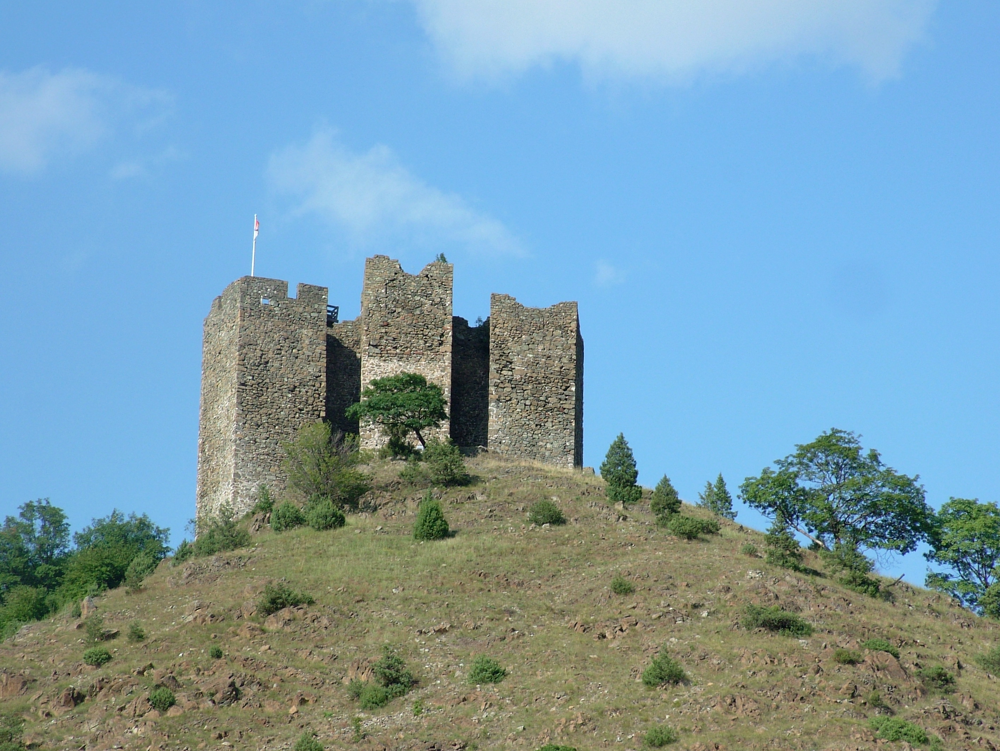

Serbian history is a complex narrative of resilience, characterized by its position as a strategic "gateway" between the East and West. After the settlement of Slavic tribes in the 6th and 7th centuries, the medieval period saw the rise of the powerful Nemanjić dynasty, which transformed Serbia into a dominant Balkan empire and established the Serbian Orthodox Church. This "Golden Age" was eventually curtailed by the Ottoman conquest following the symbolic Battle of Kosovo (1389), leading to nearly five centuries of Turkish rule. The 19th-century Serbian Revolution sparked a rebirth of the nation-state, which later became the core of the Kingdom of Yugoslavia after World War I. Following the socialist era under Josip Broz Tito and the turbulent breakup of Yugoslavia in the 1990s, modern Serbia emerged as a sovereign republic in 2006, deeply rooted in its medieval heritage while navigating a path toward European integration.

Serbia is home to some of the most formidable medieval and early modern fortresses in Southeast Europe. Strategically positioned at major river confluences and along vital trade routes, these fortifications served as the front lines for centuries of conflict...
Read More
Monasteries in Serbia are among the most important cultural, spiritual, and historical landmarks of the country. Many of them were built during the medieval period, particularly under the rule of the powerful Serbian dynasties such as the Nemanjić dynasty, which played a crucial role in spreading Christianity and establishing the Serbian Orthodox tradition...
Read More
Serbia is a hidden gem for history buffs, offering a profound journey through prehistoric settlements and Roman imperial grandeur...
Read More
Serbia’s royal residences and national monuments offer a window into a rich history defined by cultural heritage and powerful monarchies.
Read More